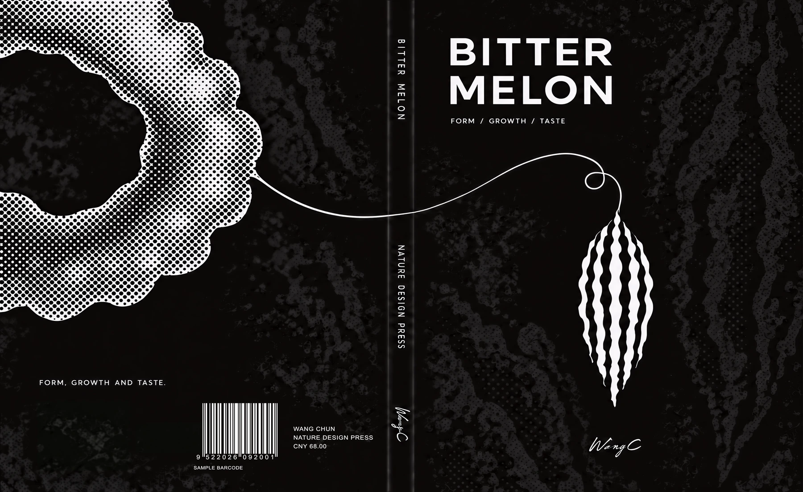

TRANSLUCENT PAPER STUDY
INSIDEtheFRUIT
Rind, flesh and seeds.
Two images meet through
translucent paper.
EDITORIAL DESIGN / WANG CHUN
THE COMPLETE BOOK / ORIGINAL READING ORDER
From beginning
to aftertaste.
Fifteen main layouts and two reverse faces for the foldout. Follow the sequence, or choose a spread below. Each image opens at its original resolution.

THE OBJECT / THE READING / THE MATERIAL
Return to the material and making.